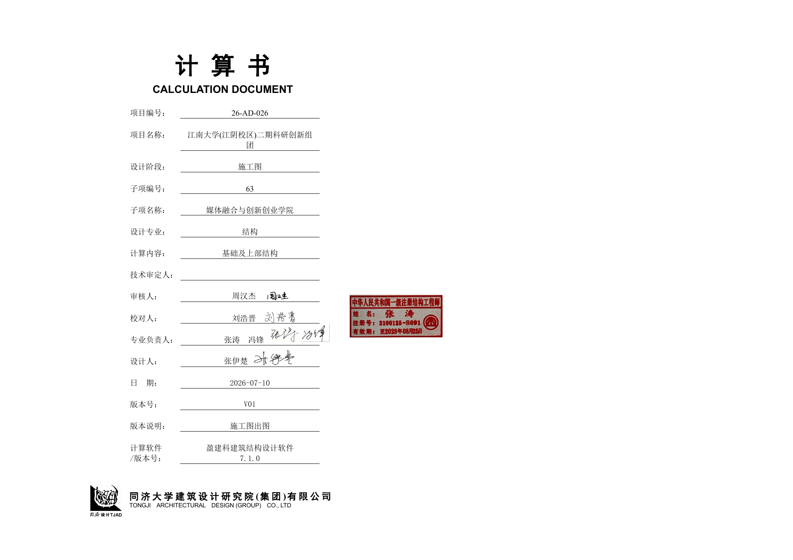
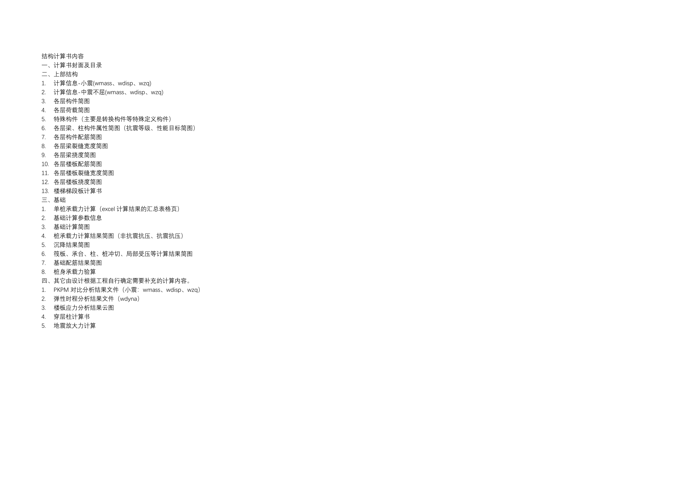

资料导入 · 建筑与地勘 提取项目和单体信息，核对后用于统一技术措施
正在连接项目资料，完成后即可选择文件。
第一步 · 项目地点与基准参数 选地点 → 自动查表填入风压/雪压/抗震参数
第二步 · 项目参数 按项目实际填写；② 阶段继承此处全部参数，不再重复录入
项目类型与专项特征 ①为唯一编辑入口；待确认不等于“无”
计算参数与模型设置 与 ② 表 8.2-1「主要输入计算参数汇总表」逐项联动；后续「反校核」以本组为基准
抗震等级与构造措施取值 同时写入 ① 表 3.8-2 与 ② 表 3.3-2，改这里两处同步
默认采用小香金猪指定的《结构计算统一措施 V1.2》。通用条款可直接编辑，地区及专项适用条件按项目调整。
1 总则
项目名称：【待确认】 项目编号：【待确认】
本项目在不违反规范的前提下，施工图要最大限度的控制结构造价（招标图需要适当放大）；
审图通过版图纸要与建筑图匹配，在施工图送审前需要求建筑、机电提前提供封版提资；
本项目各建筑单体应尽量避免特别不规则结构，如果不规则项达到3项，需要进行调整；
跨度≥24m的梁、桁架，悬挑长度≥2m的梁、桁架、转换梁，应考虑竖向地震，采用隔震设计的结构，按照有关规定计算竖向地震作用；
所有混凝土构件的保护层厚度比规范增加5mm，注意对结构计算高度及梁、柱每排可放置钢筋根数的影响。（是否执行需要结合绿建打分确定）
竖向承重构件（包括地下室外墙和人防墙）采用C50及以上等级混凝土的比例不应小于50%。（地下室外墙、人防墙是否采用C50，需要经过初步复核后确定）
2 建筑结构分类等级
| 参数 | 本项目取值 |
|---|---|
| 抗震设防类别 | 【待确认】 |
| 结构安全等级 | 【待确认】 |
| 结构重要性系数 | 【待确认】 |
| 地基基础设计等级 | 【待确认】 |
| 基础安全等级 | 【待确认】 |
| 基础结构重要性系数 | 【待确认】 |
| 建筑桩基设计等级 | 【待确认】 |
| 桩基重要性系数 | 【待确认】 |
| 建筑防火分类 / 耐火等级 | 【待确认】 |
| 地下室防水等级 | 【待确认】 |
| 地下室抗浮等级 | 【待确认】 |
| 地震时保持正常使用功能建筑分类 | 【待确认】 |
3 建筑荷载及作用
3.1 永久荷载
永久荷载包括结构构件、围护构件、面层及装饰、楼(屋)面回填(找坡)材料、室外覆土材料的自重、固定设备和设备基座、长期储物、土压力、水压力，以及其他需要按永久荷载考虑的荷载。
楼（屋）面附加恒载按建筑专业的各子项做法选用表逐项计算，取值汇总见本项目荷载表；建筑做法调整时同步更新。
河北地区填土容重要按饱和土考虑，地下车库覆土容重统一按照20kN/m3取值，抗浮按16 kN/m3，浮容重取11kN/m3。
3.2 建筑隔墙自重
（1）ALC预制板/蒸压加气混凝土砌块
蒸压加气混凝土砌块，其干密度等级为B06，平均干密度为【待确认】kg/m3，考虑【待确认】吸水放大系数。同时墙体两侧各20mm的粉刷，粉刷层容重按照20 kN/m3。
100厚墙体：【待确认】×【待确认】×0.10+0.02×20×2 = 【待确认】 kN/m²，取 【待确认】 kN/m²。
150厚墙体：【待确认】×【待确认】×0.15+0.02×20×2 = 【待确认】 kN/m²，取 【待确认】 kN/m²。
200厚墙体：【待确认】×【待确认】×0.20+0.02×20×2 = 【待确认】 kN/m²，取 【待确认】 kN/m²。
250厚墙体：【待确认】×【待确认】×0.25+0.02×20×2 = 【待确认】 kN/m²，取 【待确认】 kN/m²。
300厚墙体：【待确认】×【待确认】×0.30+0.02×20×2 = 【待确认】 kN/m²，取 【待确认】 kN/m²。
（2）混凝土实心砖
200厚混凝土实心砖（地坪下与土接触）取4.80 kN/m2
300厚混凝土实心砖（地坪下与土接触）取7.20 kN/m2
（3）轻质隔墙
轻质隔墙荷载取1.0 kN/m2。
（4）建筑幕墙
建筑幕墙线荷载统一按照1.5 kN/m2，特殊地方另行复核。
3.3 楼面均布活荷载
| 项次 | 类别 | 标准值（kN/m2） | 操作 |
|---|---|---|---|
| 1 | 教室 | 2.5 | |
| 2 | 宿舍、走廊（宿舍） | 2.0 | |
| 3 | 办公室、交流室 | 2.5 | |
| 4 | 报告厅 | 3.5 | |
| 5 | 厨房 | 4.0 | |
| 6 | 运动场、风雨操场 | 4.5 | |
| 7 | 仓库、器材室、储藏室 | 6.0 | |
| 8 | 卫生间、盥洗室、淋浴间 | 2.5 | |
| 9 | 茶水间、清洁间 | 2.5 | |
| 10 | 走廊、门厅、电梯厅、中庭 | 3.5 | |
| 11 | 楼梯、阳台 | 3.5 | |
| 12 | 地下车库 | 4.0 | |
| 13 | 厨房冷库 | 10 |
注：1）表格中楼梯荷载是按照双跑考虑的，当实际多于双跑时，按实际情况放大；
3.4 屋面均布活荷载
| 项次 | 类别 | 标准值（kN/m2） | 操作 |
|---|---|---|---|
| 1 | 不上人屋面 | 0.50 | |
| 2 | 上人屋面 | 2.0 | |
| 3 | 屋顶花园 | 3.0 |
注：1）屋顶花园覆土荷载另计；
2）如果屋面有光伏，光伏系统荷载按照0.50 kN/m2另行附加；
3.5 机电设备楼屋面均布活荷载
| 项次 | 建筑功能 | 标准值（kN/m2） | 操作 |
|---|---|---|---|
| 1 | 强、弱电间 | 5.0 | |
| 2 | 变、配电间 | 10.0 | |
| 3 | 通讯机房、网络机房 | 8.0 | |
| 4 | 生活水泵房、热水泵房、消防泵房 | 15.0 | |
| 5 | 空调机房、新风机房、排烟机房 | 8.0 | |
| 6 | 电梯机房 | 8.0 | |
| 7 | 电梯基坑 | 20.0 | |
| 8 | 隔油机房 | 15.0 | |
| 9 | 水箱间 | 按实际重量取值 |
注：1）各类机房设备基础另行计算；
2）消防车荷载按覆土厚度折算。
3.6 雪荷载
| 参数 | 本项目取值 |
|---|---|
| 基本雪压（50 年一遇）自动・可改 | 【待确认】 |
| 雪荷载准永久值系数分区自动・可改 | 【待确认】 |
3.7 风荷载
| 参数 | 本项目取值 |
|---|---|
| 基本风压（50 年一遇）自动・可改 | 【待确认】 |
| 风荷载体型系数 | 【待确认】 |
| 地面粗糙度类别 | 【待确认】 |
3.8 地震作用
| 参数 | 本项目取值 |
|---|---|
| 抗震设防烈度自动・可改 | 【待确认】 |
| 设计基本地震加速度自动・可改 | 【待确认】 |
| 设计地震分组自动・可改 | 【待确认】 |
| 场地类别 | 【待确认】 |
| 设计特征周期派生 | 【待确认】 |
| 结构阻尼比 | 【待确认】 |
| 水平地震影响系数最大值派生 | 【待确认】 |
| 地震加速度时程最大值派生 | 【待确认】 |
| 中震正常使用设防烈度派生 | 【待确认】 |
| 主体结构体系 | 【待确认】 |
| 抗震设防类别 | 【待确认】 |
| 抗震措施采用说明 | 【待确认】 |
| 隔震措施采用说明 | 【待确认】 |
| 隔震层以上框架 抗震等级 | 【待确认】 |
| 隔震层以上框架 抗震构造措施 | 【待确认】 |
| 大跨结构（跨度 ≥24m）抗震等级 | 【待确认】 |
| 长悬挑结构抗震等级 | 【待确认】 |
| 关键构件（转换梁柱等）抗震等级 | 【待确认】 |
| 有地下室时框架 抗震构造措施 | 【待确认】 |
| 地上（下）外延一跨竖向构件抗震等级 | 【待确认】 |
| 纯地下室抗震等级 | 【待确认】 |
| 连廊框架抗震等级 | 【待确认】 |
4 结构材料
4.1 混凝土
表4.1-1 混凝土强度等级
| 构件 | 适用位置 | 混凝土强度等级 | 备注 | 操作 |
|---|---|---|---|---|
| 筏板、承台、拉梁、无地下室区域的电梯坑 | C35 | - | ||
| 楼盖（梁、板） | 地上 | C30 | - | |
| 地下 | C35 | - | ||
| 地下室外墙 | C35、C50 | 根据绿建方案最终确定是否采用C50 | ||
| 地下室室内混凝土墙（包括人防墙） | C35、C50 | 根据绿建方案最终确定是否采用C50 | ||
| 框架柱 | 纯地下室车库 | C35 | - | |
| 地上及投影范围内车库 | C50~C60 |
注：1）无地下室的承台、拉梁、电梯基坑抗渗等级P10；
2）地下室外墙抗渗等级为P10；
3）地下水位以下的地下室顶板抗渗等级为P10，地下水位以上的地下室顶板抗渗等级为P8；
4）室内区域的人防顶板抗渗等级为P8；
4.2 钢筋
（1）HRB500：梁纵筋、柱纵筋
（2）HRB400：板、梁箍筋、柱箍筋、梁腰筋（包括抗扭腰筋、构造腰筋）、地下室外墙钢筋、筏板钢筋、承台钢筋、基础拉梁钢筋；
4.3 钢材
钢材Q355B（普通钢结构）、Q390B（大跨结构中关键构件应力比控制时）
4.4 非承重砌体墙
| 适用范围 | 墙体位置 | 砌体类型 | 强度等级 | 密度等级 | 操作 |
|---|---|---|---|---|---|
| 地上 | 外围护墙 | 蒸压加气混凝土砌块 | A5.0 | B06 | |
| 内隔墙 | 蒸压加气混凝土砌块 | A3.5 | B06 | ||
| 地下室 | 内隔墙 | 蒸压加气混凝土砌块 | A5.0 | B06 | |
| 无地下室 | 室外地面以下与水土接触范围 | 混凝土普通砖 | - | - |
5 结构布置统一措施
5.1 结构布置及通用设置
（1）归并系数均为1.01；
（2）混凝土保护层厚度需增加5mm，注意钢筋的排布；
5.2 竖向构件截面尺寸及材料强度
（1）底部框架柱应尽量按轴压比控制确定截面尺寸；
（2）框架柱混凝土强度等级C30~C60，按计算确定，地上及对应的地下室投影混凝土强度C50起；
（3）地下室外墙、地下室内混凝土墙（包括人防墙），采用C35，后续根据绿建方案复核是否需要调整为C50；
5.3 次梁布置原则及梁截面尺寸
（1）地下室顶板室外覆土区域采用大板加腋的无次梁布置；
（2）除第1条外的其他区域的次梁尽量采用单向布置（日字梁或目字梁），尽量不采用井字梁；
（3）次梁布置间距
（a）地上及地下一层非人防区域：板跨按照3.3~4.5m左右确定，并尽量接近4.2m；
（b）地下室顶盖室内非人防区域（板厚180）：次梁布置控制板跨度不超过6m；
（c）人防区域的布置由人防设计确定；
（4）梁截面尺寸：
（a）梁截面尽量采用高宽比较大的，梁高根据建筑净高需求确定，但是跨高比不建议超过16；
（b）在建筑净高允许下，梁尽量做高，梁宽以顶部及底部不放三排钢筋为控制原则，常规400~1000高梁，配筋率控制在1.8%以下即可保证不放三排钢筋；
（c）YJK 计算参数中，勾选“矩形混凝土梁按T形梁配筋”；
（d）YJK中梁的计算配筋率（支座或跨中的最大值）建议不超过且尽量接近下表数值，以保证经济性。常规梁不宜大范围出现配筋率（支座或跨中的最大值）低于1.4%的情况；
| 构件 | 支座筋 | 底筋 | 放大系数 | 备注 | 操作 |
|---|---|---|---|---|---|
| 普通框架梁 | 1.80% | 1.80% | 1.00 | 支座、底筋不放3排 | |
| 普通次梁 | 1.80% | 1.80% | 1.00 | 底筋不放3排 | |
| 悬挑梁（≤2m） | 1.40% | - | 1.00 | 支座不放3排 | |
| 悬挑梁（＞2m） | 1.40% | - | 支座筋1.2 | 支座不放3排 | |
| 大跨度框架梁、次梁（跨高比≥16） | 1.80% | 1.40% | 底筋1.2 | 支座、底筋不放3排（按裂缝、挠度控制） | |
| 托柱转换梁 | 1.80% | 1.40% | 底筋1.2 | 支座、底筋不放3排 |
（5）YJK计算结果配筋率检查流程：
（a）配筋率检查限值输入1.8%，次梁支座可略超，其他尽量调整；
（b）对大悬挑梁支座钢筋进行专项检查（1.4%限值）；
（c）对大跨梁、转换梁底筋进行专项检查（1.4%限值）；
（6）次梁端部与主梁连接点铰接
5.4 楼（屋）面板
（1）地上
（a）板厚不宜小于120mm，板跨4.55m~5.0m板厚取130mm；
（2）地下室顶板
（a）室内非人防区180mm，室外非人防区域250mm（加腋）；
（b）隔震层板厚160mm；
（c）大开洞周边楼板应采用弹性膜进行计算，弹性膜的范围不应小于洞边外扩2跨且应至少一个方向贯通改楼层平面；
（d）人防顶板按人防设计；
5.5 指标控制
材料用量控制指标：楼层每平米荷载值（见下图截图），钢筋混凝土框架结构：14~16
6 结构计算
6.1 周期折减系数
周期折减系数，框架结构：填充墙较多可取0.75，填充墙较少可取0.80。
6.2 活荷载折减
根据建筑功能，考虑规范中梁、板、柱、墙的所有活荷载折减系数；
仅在楼面活荷载大部分大于4.0 kPa的楼层考虑活荷载不利布置；
下述建筑功能需在YJK中按照房间功能输入：
书库、档案室、贮藏室；
密集柜书库；
通用机房、电梯机房；
6.3 竖向地震作用
跨度≥24m的梁、桁架，悬臂长度≥2m的梁、桁架，以及托柱转换梁应考虑竖向地震，具体操作可按下述方法：
对于需要考虑竖向地震的结构梁，可在特殊梁中选择竖向地震作用进行特殊梁定义，前处理参数定义中的“地震作用计算信息”应选择“计算水平和反应谱法竖向地震作用（局部模型独立求解）”。
对于大跨梁（非悬臂），考虑竖向地震时，应保证跨中至少有3个节点；
对于大跨度桁架或悬臂桁架则应采用单独考虑竖向地震组合的模型进行竖向地震的复核；
以下两个参数在前处理中需要勾选：
7 结构配筋
7.1 梁（优先采用 TSSD，也可采用 YJK）
框架梁采用两根拉通筋，其他不足的补充架立筋；
次梁全部采用架立钢筋；
框架梁底筋的第二排按照计算不需要的进行截断；
箍筋允许三肢箍；
梁箍筋直径最小值取8mm，箍筋间距以10mm为模数；
架立筋采用HRB400；
次梁底筋按计算进行截断；
架立钢筋按《混规》9.2.6-2设置；
梁跨度＜4m，架立筋直径不宜小于8mm；
梁跨度4m~6m，架立筋直径不宜小于10mm；
梁跨度＞6m时，架立筋直径不宜小于12mm；
梁裂缝宽度按0.300mm控制，对于需要按照0.200mm控制的区域（地下室室外梁顶、屋面梁顶），需要按照0.200mm裂缝宽度生成配筋。
7.2 柱（YJK）
允许采用两种钢筋直径；
YJK建模时，特别注意框架柱的b边、h边方向问题，建模时不允许旋转柱子，如果b边与说明不一致时，需要在图中单独注明；
自动出图前需要复合一下是否定义角柱；
柱中纵筋直径不要超过36mm，对于自动生成直径40mm、50mm的钢筋需要手动替换；
7.3 板（优先采用 TSSD，也可采用 YJK）
采用HRB400钢筋，最小构造配筋率可以按照0.20%；
超长处理措施：超长结构主要是针对框架结构超过55m，仅超长方向设置拉通筋，拉通筋配筋率0.15%，不超长方向仍采用分离式配筋；
普通楼板（非地下室顶板及屋面板）配筋措施
板底筋：普通楼板底筋一般均为构造配筋，按0.20%配筋率拉通，规格详见下表。当大部分区域计算配筋面积高于构造配筋时，可按多数计算结果设置板底拉通筋。对于板底筋计算面积大于拉通筋的局部楼板进行底筋替换。超长结构替代钢筋与其他拉通钢筋按受拉搭接，非超长结构则分别锚入支座即可，应在各单体的小说明中进行区分明确。
表 6.3-1 板底构造拉通筋
| 板厚（mm） | 拉通筋 | 操作 |
|---|---|---|
| 120 | C8@200 | |
| 130 | C8@190 | |
| 140 | C8@170 | |
| 150 | C8@160 |
超长方向板顶筋：超长方向板顶拉通钢筋按0.20%配筋率拉通，规格详见下表。支座不足处钢筋采用等间距附加或隔一加一。
表 6.3-2 超长方向板顶拉通筋
| 板厚（mm） | 拉通筋 | 操作 |
|---|---|---|
| 120 | C8@200 | |
| 130 | C8@190 | |
| 140 | C8@170 | |
| 150 | C8@160 |
非超长方向板顶筋：非超长方向采用分离式配筋。
屋面板
板顶C8@150双向拉通，板底C8@200双向拉通，板顶支座筋不足处附近，板底筋不足处替代。
地下室顶板
地下室顶板250mm板厚区域，采用C12@180双层双向拉通；
地下室顶板180mm板厚区域，采用C10@170双层双向拉通；
上述板顶支座钢筋不足处另外附加，板底筋不足处替代。
楼板加强区域拉通筋
大洞口周边加强楼板，C8@200双层双向拉通；
卫生间等有水房间，C8@150双层双向拉通；
上述各种做法均可通过TSSD板自动绘制生成，绘制方法采用“不绘制编号，原位标注”法，见下图。
板筋绘制时，建议勾选以下选项生成中间结果，对中间就结果显红的异常区域手动复核。
TSSD可分区域进行楼板钢筋自动绘制，当处置奶多个不同配筋区域时，可设置自动绘制图，详见TSSD说明。
楼板钢筋生成后，需仔细核查，可能存在的问题有：
施工图需补画拉通筋，招标图可仅在说明中表达，图面不画；
部分区域支座钢筋可能缺失，尤其是小板区域；
部分区域支座筋可能绘制过多，需删除；
对于需控制0.200mm裂缝的区域（地下室室外楼板顶、屋面顶），重点复核；
8 楼梯
楼梯相关要求及计算书格式，严格按照院里文件“结构楼梯绘图表达方式及注意事项v2024.11.5”、“三院楼梯构件库计算表 v2024.11.5”。
继承参数 来自「① 统一技术措施」，只读；如需修改请回到 ① 阶段 去修改 →
扩初说明补充参数 统一措施未涉及的项，仅在此处出现
结构模型总信息 · 与统一措施比对 建筑与地勘资料请在①统一技术措施导入
本项目正文尚未编写。请通过启动Demo.cmd打开工作台，载入扩初编辑器后编写。
地方规范查询 输入省市名称，查看规范名称、当前状态和权威原始网页
| 规范名称及编号 | 有效状态 | 权威原始网页 |
|---|
第一步 · 导入模型总信息 WMASS.OUT / WDISP.OUT / WZQ.OUT，与 ② 阶段同一批文件；读的是模型里「实际采用」的参数
第二步 · 输入一致性核对 「① 统一措施」约定值 ↔ 模型实际采用值；不一致只提示，改哪一侧由你决定
| 核对项 | ① 统一措施约定值 | 模型实际采用值 | 判定 | 说明与处置建议 |
|---|---|---|---|---|
| 尚未校核：请先在上一步导入模型总信息，再点「开始反校核」。 | ||||
「采纳模型值」按钮只把该行模型值写回 ① 面板，且需二次确认；其余任何情况都不会改动参数
第三步 · 结果合规核对 整体指标 ↔ 规范限值；「规范限值」列可直接改（隔震结构、不同体系 / 高度分界取值不同）
| 整体指标 | 模型计算值 | 规范限值 | 判定 | 依据与备注 |
|---|---|---|---|---|
| 导入模型总信息后自动生成。 | ||||
第四步 · 差异清单与报告 格式与「待核查台账」一致，可直接交给 Agent 或附在计算书后
（尚未校核）
说明：本模块的取值口径是「模型总信息里实际采用的参数」，与「统一措施里约定的参数」逐项比对。 凡是 .OUT 与参数口径不同（如嵌固端只输出层号、抗震构造措施只输出「不改变 / 提高一级」、斜交只输出附加地震数） 或 取决于构造与实际情况（周期折减系数、是否需竖向地震）的项，一律标「需人工确认」， 由人对两侧同时负责——不猜、不静默改，沿用「场地类别 ↔ 地勘资料 校核」定的同一条原则。
第一步 · 导入资料 工程量 .txt + 各层钢筋用量表；文件只在本页解析，不外传
第二步 · 按楼层钢筋用量 按你定的颗粒度：一层一行；分级别明细在表内保留原始量，不放大的数值另列
| 楼层 | 楼面面积（m²） | 纵筋（t） | 箍筋（t） | 基础插筋（t） | HRB400（t） | HRB500（t） | 合计（t） | 含钢量（kg/m²） |
|---|---|---|---|---|---|---|---|---|
| 尚未导入钢筋用量表。 | ||||||||
导入的各层钢筋用量表若有缺层，可点「手工补一层」补录；补录行的数值会被标注来源为「人工」
第三步 · 按楼层混凝土用量 取自「上部结构工程量」；墙下的「墙厚 xxx」细目不重复计入
| 楼层 | 墙（m³） | 梁（m³） | 柱（m³） | 楼板（m³） | 悬挑板（m³） | 合计（m³） | 楼面面积（m²） | 单方（m³/m²） |
|---|---|---|---|---|---|---|---|---|
| 尚未导入上部结构工程量。 | ||||||||
| 基础构件类型 | 个数 | C35（m³） | 其它（m³） | 合计（m³） |
|---|---|---|---|---|
| 尚未导入基础混凝土用量。 | ||||
第四步 · 汇总指标与标段分摊 放大系数在第一步改；标段分摊按建筑面积比例折算，可关闭
| 指标 | 数值 | 口径与说明 |
|---|---|---|
| 尚未统计。 | ||
| 标段 / 区块 | 建筑面积（m²） | 面积占比 | 分摊钢筋（t） | 分摊混凝土（m³） |
|---|
标段分摊用于复刻院里模板里「按面积折算」的做法：模板中 F18 = F29/B10*B6 即把一标段的墙钢筋量按面积比例折给二标段。本卡把它做成显式规则，口径可查、可改
（尚未统计）
卡片墙 按「角色 × 阶段」筛选；当前不可见的卡片也列在这里，并说明为什么不可见
第一步 · 生成项目快照 由专业负责人提交；字段值全部取自本工作台现有卡片，不重复录入
| 快照字段 | 取值 | 来源卡片 | 说明 |
|---|---|---|---|
| 点「刷新快照」生成。 | |||
快照是唯一数据出口：总控只读快照，不回写项目文件；口径由负责人确认后提交
第二步 · 全院总览 导入多份项目快照 → 只读汇总与横向对比
| 项目名称 | 阶段 | 建筑面积（m²） | 用钢量（t） | 含钢量（kg/m²） | 混凝土（m³） | 单方混凝土（m³/m²） | 负责人 |
|---|---|---|---|---|---|---|---|
| 尚未导入任何项目快照。 | |||||||
施工图结构总说明 · 01 通用说明
结构设计总说明 · 参数联动生成 604母版 → 603项目决定 → 同源预览
规则 FEATURE 0.1-draft / CLEANING 0.1-draft
适配器 本地只读；603 API 待接入
第一层 · 母件选择 通用说明、地基基础固定保留；其余按①项目类型求值
| 母件 | 项目参数条件 | 判定 | 原始块 | 清除纯注释 / 隔离混排 | 待人工处理 | 来源 |
|---|---|---|---|---|---|---|
| 点击“根据参数联动输出总说明”开始。 | ||||||
条款建议与复核队列 稳定 clause_id 不随显示编号变化
| 显示号 | 条款 / 稳定ID | 组件 | 系统建议 | 参数影响与理由 | 来源 |
|---|
人工确认与修改差异 有歧义、规范效力或责任判断的内容逐项确认
待确认队列
当前条款差异
同源草案预览 尚未生成快照
第一步 · 连接提资根目录 选一次目录，以后每次点一下「同步」就扫出全部新增——记账寄生在「把文件放对文件夹」这个动作上，不需要你额外登录填表
目录命名约定：方向 \ 对方 \ 批次 \ 主题，例如 1-收到 \ 建筑 \ 2026-09-10_第3批_平面调整 \ 2-发出 \ 审图 \ 2026-09-20_送审版 \； 中间多一层「阶段」（扩初 / 施工图）也自动认。
认不出来的部分不猜：字段留空，你在表里改一次，之后每次同步都以你的修正为准。
两个动作分离：到没到靠扫目录自动出；办没办完（审图意见回没回）机器读不出来，靠状态下拉点一下。
第二步 · 提资台账 收到 / 发出逐批留痕；状态一次点击；可导出 CSV 交内业归档
| 方向 | 阶段 | 对方 | 类型 | 批次 / 版本 | 日期 | 主题 | 附件 | 状态 | 备注（分发给谁） | 操作 |
|---|---|---|---|---|---|---|---|---|---|---|
| 台账为空。连接目录后点「同步」，或用上面的「一键登记条」补录一行试试。 | ||||||||||
附件列鼠标悬停可看文件名清单；「主题」悬停看该行对应的原始目录路径。
第三步 · 漏项自检 「该提的有没有提」——与台账做差集，缺口一直红字挂着，不会因为你忘了点而消失，只会因为真到齐而消失
| 方向 | 对方 | 阶段 | 批次 / 版本 | 说明 | 操作 |
|---|
厂家类提资每个项目不同：删掉不适用的、加上本项目特有的即可。对方栏写「A/B」表示二者之一命中即算到位。清单与本台账一样存在本机。
第四步 · 免点击归档（可选） 连「点一下同步」都不想点，就在本机放一个常驻小脚本
它不能做什么：读不出「审图意见回复了没有」——那类状态在 CAD 里，只能靠台账上的下拉点一下。
为什么网页不能自己后台监听：单文件 HTML 在浏览器里拿不到文件系统监听权限，只能做到「授权一次 + 点一下同步」。要真正全自动，就得靠这个本地脚本。
留档在哪：台账存在本机浏览器里（换电脑不会自己跟过去），所以关键节点请用「导出 CSV / .json」落一份到项目盘——这也是留痕的一部分。
计算书
封面沿用母件版式，历史项目与人员信息在导出时替换；目录按四个固定大标题分组编辑，Excel 与 3 个 OUT 文件可联动生成 A3 Word。
计算目录
0 条计算书快照
母件页 + 动态目录

Excel 表格编辑与 Word 联动
正在读取…输入格可编辑，公式格只读；原始 Excel 不会被覆盖。
3 个 OUT 文件转 A3
尚未选择文件随当前项目保存，在本机转为 A3 Word，不写回原始资料。